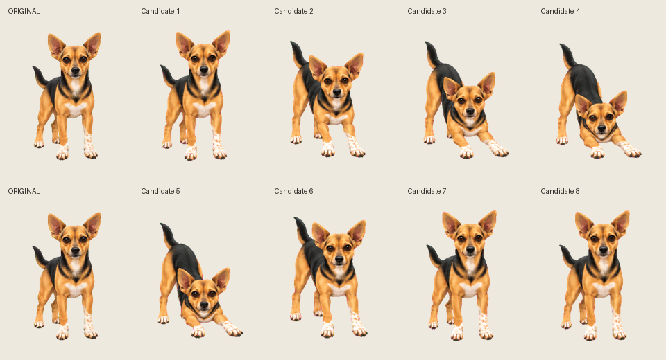

STAGE 3 OF 5 · APPROVED
Ronnie’s stretching movement
Approved by Josh. The stretch holds briefly and returns through the lowering poses in reverse. Previously disclosed face and tail differences remain recorded; the original atlas remains the character reference.
Original · reference
Stretching · approved
The preview starts paused. The original game atlas is unchanged. The approved stretch is included in the review sheet.
Compare all eight frames

Stage 4 in progress: eating. Sleeping follows after verification. All approved movements will share one PR. Game integration follows a separate decision.
Animated GIF · Stage notes